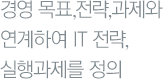

직무소개
각 분야별 상세한 직무소개
(RJP,Realistic Job Preview)를
통해, 입사지원시 지원자분에게
정확하고 실제적인 도움을
드리고자 합니다.
전략기획
직무소개
기획 직무의 지상과제는 기업의 비전 및 경영목표를 입안하여 최고 경영진의 합리적인 의사결정을
도움으로써 전사 이익의 극대화를 실현하는 일입니다.
이를 위해 목표 달성을 위한 전략(Strategy)/계획(Planning)을 수립하고, 경영 실적에 대한
분석/점검/평가를 수행하고 있습니다.
기본적으로 경제 및 경영 환경/재무제표에 대한 기초 이해가 필요하며,
현상의 원인에 대한 분석력 및 대안 제시 능력이 요구됩니다.
요구자질
- 전략적 사고 및 기획력.
- 재무분석 지식.
- 원가/손익관련 지식.
- 성과관리 지식.
- Planning능력(전략/사업계획 등).
- 커뮤니케이션 능력. Documentation/Reporting Skill.
직무내용
- 1.기업 중장기 전략 및 비전을 수립하고 Business Portfolio를 점검합니다.
- 2.전사/사업 부문별 이슈 점검 및 시행 여부를 판단합니다.
- 3.전사 사업 계획 수립방침을 설정/취합/분석합니다.
- 4.부문별 핵심성과지표(KPI)/업적평가/성과상여(PS) 방향을 수립하고,
발생한 성과를 평가합니다. - 5.부문별 예산편성을 계획/집행/통제합니다.
- 6.각종 전사 회의체/임원 워크샵/법인 이사회를 운영합니다.
비전
기획 직무를 통해 습득할 수 있는 역량은 다음과 같습니다.
첫째, 사업의 진행 전반을 최고 경영진의 시각에서 고민해 볼 수 있는 기회가 존재합니다.
둘째, 회사내 많은 사업부들과 Co-Working을 수행해야 하므로
전사적인 업무흐름/상관관계를 파악할 수 있습니다.
셋째, 전략/재무/회계/해당 사업분야에 대한 기본 지식을 바탕으로 논리적이고 신속한
의사결정구조를 체화할 수 있습니다.
직무수행기간 동안 회사내 많은 부분들에 대해서 학습함으로써,
향후 기획/전략 전문가로의 성장 및 브랜드 사업부에서의 실무경험을 바탕으로
다양한 개인 비전의 설정이 가능합니다.
세부직무
전략, 기획
인재개발
직무소개
글로벌 무한 경쟁이 심화됨에 따라 조직 및 인적자원관리에 대한 중요성이 증대되고 있습니다.
이러한 니즈에 부합하여 HR(Human Resources)은 LF의 비전과 5 Core Values 및
중장기 사업전략을 근간으로 인적자원의 운용 전략을 수립/실행하는 직무입니다.
채용/유지/인력조직관리/교육/평가/보상/급여/조직문화/조직개발/노경/복리후생 등
다양한 업무를 회사의 전략적 방향성과 연계하여 조직/구성원의 개발(Development)을
모색합니다.
세부 직무는 인사(HRM, Human Resources Management)/연수(HRD, Human Resources
Development)로 구분됩니다.
요구자질
- 인사관리 기본지식(직무분석/임금관리/MBO/조직문화/급여관련 등).
- 연수관련 기본지식(CDP설계/기업교육/교육과정개발/Facilitating).
- Balanced Decision Making능력.
- 조사/분석/통계/평가 지식.
- 산업/조직심리학 지식.
- 관련법규지식(노동범/소득세법 등).
- 커뮤니케이션 능력.
직무내용
- 1.회사의 비전/Core Values와 부합하는 조직/직무에 적합한 인재를 모집/선발/유지합니다.
- 2.구성원 역량강화를 위한 역량별 교육체계를 수립하고, 교육과정을 기획/설계/운영합니다.
- 3.인적자원에 대한 공정(Impartial)한 평가/보상시스템을 수립/운영하여 구성원이 최고의 성과를
창출할 수 있는 유인(Incentive)을 제공한다. - 4.중장기 사업전략 및 현재 영위하는 사업규모를 바탕으로, 최적의 조직/인적자원구성에 대해
지속적으로 타당성을 분석/보고하여 최고 경영진의 합리적 의사결정을 지원합니다.
비전
고전적인 의미의 생산의 3요소가 토지/노동/자본이라면, 지식경영의 시대에는 ‘지식’이
새로운 요소로 조명되고 있습니다.
단순한 양적(Quantity)개념의 ‘노동’에 질적(Quality)요소인 ‘지식’이 혼합되면서, 향후 기업의
경쟁력은 우수한 인적자원(Human Capital)의 확보/유지/관리에 달려있다고 볼 수 있습니다.
이러한 경영 환경의 변화에 따라 기업내 HR직무의 역할 및 책임이 점차 증대되고 있습니다.
직무 전문성을 지속적으로 개발하여 HRM/HRD전문인력으로서 경력설계가 가능하고,
향후 관리자로의 육성을 희망할 시에도 조직/인력관리에 대한 경험은
직무수행상 도움이 될 것입니다.
세부직무
인사(HRM), 연수(HRD)
재무
직무소개
재무직무는 기본적으로 건실한 기업 재무구조를 모색하고 경영진의 올바른 의사결정을
지원함으로써, 효율적 경영활동에 대한 가치창조를 그 목적으로 하고 있습니다.
수치에 대한 기본적인 감각/분석력이 있어야 하며, 치밀하고 꼼꼼한 업무처리가 가능한 역량을
보유하고 있어야 합니다. 세부직무는 회계(Accounting)/금융(Finance)/세무(Tax Accounting)/
IR(Investor Relations) 등으로 나뉩니다.
요구자질
- 실물경제 기본지식(조세/채권/증권/환 등).
- 회계 기본지식(관리/재무/세무 등).
- 관련법규지식.
- 위기관리능력.
직무내용
- 1.회계 : 기업의 재무제표를 작성/분석하여 경영진의 합리적 의사결정을 지원합니다.
- 2.금융 : 원화/외환 자금에 대한 전략적 집행/운용/조달을 담당합니다.
- 3.세무 : 적법한 조세기준에 의해 법인세/부가세 등 납세액을 산정하고 납부하여 세무적 위험을 최소화합니다.
- 4.IR : 투자자에게 적절한 정보를 제공하여 주식의 적정가치를 시장에 반영토록 하며,
시장상황에 대한 보고를 통해 경영진의 의사결정을 지원합니다.
비전
전사적인 관점에서 재무적 의사결정 능력을 배양할 수 있으며, 파트(회계/금융/세무/IR)간의 Task
Rotation을 통해 재경 전문인력으로 성장할 수 있는 기회가 주어지게 됩니다. 조직 리더급에게
재무적인 통찰력(Financial Insight)은 필수적이어서, 어느 분야에서든 관리자로서의 자질을
갖추는데 재무 직무에서의 직무수행 경험이 유리하게 작용할 것입니다.
세부직무
회계, 금융, 세무, IR
마케팅
직무소개
시장에서의 경쟁이 치열해 질수록 경쟁자와는 다른 ‘무엇’이 필요합니다.
우리 회사만의 ‘무엇’을 소비자에게 각인시키기 위해, Database를 기반으로 다양한 마케팅 전략을
계획하고 실행합니다. 궁극적으로 ‘소비심리’를 다뤄야 하기 때문에 실행된 전략에 대한
논리적 효과분석이 필수입니다. Database에 대한 이해도가 필요하며
통계/분석적 사고가 요구되는 직무입니다.
요구자질
- CRM 이론/지식.
- 조사/분석/통계 지식.
- Data Mining 지식.
- 원가/손익 관련 지식.
- 소비자 행동이론 이해.
- 관련법규 지식(소비자 보호법/개인정보 보호법령 등).
직무내용
- 1.고객을 효율적으로 관리하기 위한 마케팅 제도를 기획/운영합니다.
- 2.고객정보를 수집/관리하여 데이터화합니다. Database에서 추출한 분석자료를 바탕으로
효과적인 마케팅 방안을 기획합니다. - 3.고객 Database를 활용한 전사 프로모션을 진행하여 매출활성화를 유도하며,
브랜드별로 진행되는 프로모션에 대한 검토/ROI(Return of Investment)측정/평가를
실시합니다. - 4.이종업계와의 제휴를 맺고 타사고객 Database를 활용해
당사 매출과 연계되는 전략을 수립합니다.
비전
신입지원자들이 갖고 있는 마케팅 직무에 대한 환상과는 다르게, Marketing Field는 소리없는
전쟁터입니다. 마케팅 활동이 Cost로 인식되지않게 하기 위해선, 제반 전략에 대한
통계학/사회과학적 효과분석이 뒷받침 되어야 합니다.
이를 위해 소비자/브랜드/통계/마케팅 이론 등 직무관련 전문지식에 관한 재교육 및
자기계발에 부단한 노력이 요구되는 직무입니다.
향후 광고/홍보 등의 직무를 경험함으로써 패션 마케팅 전문가로서의 비전을 모색할 수 있으며,
브랜드 부서에서 직무경험 후 Brand Manager로의 육성 등 다양한 설계가 가능합니다.
세부직무
CRM, 전사 프로모션기획
IT
직무소개
당사 IT 직무는 경영 목표,전략,과제와 연계하여 IT 전략,실행과제를 정의하고, Mega 프로세스의 개선과 업무 생산성 제고등을 위한 중장기 M/Plan과 단기 업무전산화 계획의 수립,운영등 업무를 기획,관리하며 경영방침에 따라 효과적인 투자계획을 수립,집행하고 효율적인 자산관리로 사업의 영속성 지원합니다. 또한 주요 Mega 프로세스 영역에 대한 개선사항을 도출하여 적정한
투자방안등시스템 개발 계획서를 작성하고 개발인원 투입을 통해 시스템을 개발하고 운영
관리하기도 합니다.
요구자질
- IT 아키텍쳐 이해
- IT 기본역량
- IT 투자성과 평가능력
- Process Innovation 이해.
직무내용
- 1.IT기획
- 투자 요구사항 수렴 및 계획 수립.
- 중장기 M/Plan 수립.
- 단기업무 전산화 계획 수립.
- 실행과제 이행 및 관리.
- 전산지원 운영 이슈 정리.
- 2.시스템 개발/운영
- 전산시스템 활용상 이슈 정리.
- 개선 요구사항 도출.
- 목적 및 기대 성과 도출.
- 개발범위, 투입공수 산정 및 일정계획수립.
- 투자 및 비용계획 수립 및 품의.
- 검수 및 인수인계 확인.
- 시스템 운영, 관리.
- 3.전산 자산 관리
- 전산장비, 매장POS장비 중장기 구매 계획수립.
- 요구사항 수렴 및 투자 타당성 검토.
- 투자 품의 및 집행.
- 자산운용 계획 수립.
- 자신실사 및 재고관리.
- 외주 관리.
비전
당사 IT 직무는 IT프로그램을 단순히 운영, 관리 하는 업무가 아니라 기획, 추진하는 업무를 주로 진행합니다. 특히 ERP 시스템이 지속적으로 개선될 수 있도록 임직원의 의견에 늘 귀 기울이며
보다 나은 시스템이 운영을 목적으로 하기에, 장단기적으로 당사의 IT 관리자가 되면 추후
아래와 같은 역량을 쌓을 수 있습니다.
첫째, 회사의 단기 및 중장기 PLAN에 따라 IT 기획 및 실행과제 이행업무를 수립하면서 IT 전략
전문가가 될 수 있습니다.
둘째, 회사 내 많은 사업부 및 직무 담당자와 Co-Working을 수행해야 하므로 전사적인 업무흐름을
파악할 수 있습니다.
이를 통하여 향후 IT기획/전략 전문가로의 성장이 가능하며 다양한 개인 비전의 설정이
가능합니다.
세부직무
IT기획/시스템개발,운영/전사자산관리/정보보안